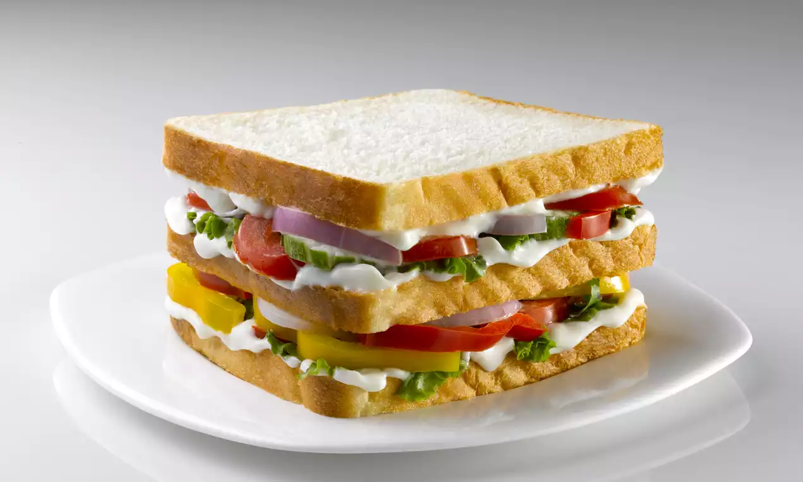

Delicious Veg Sandwich
Veg Sandwich Recipe
Ingredients
- 4 Bread Slices
- 2 tbsp Butter
- 1 Tomato (sliced)
- 1 Onion (sliced)
- 1 Cucumber (sliced)
- 2 Cheese Slices
- Salt to taste
- Black Pepper
Preparation Steps
- Spread butter evenly on all bread slices.
- Arrange tomato, onion, and cucumber slices on one bread slice.
- Sprinkle salt and black pepper over the vegetables.
- Place a cheese slice on top of the vegetables.
- Cover with another bread slice.
- Toast the sandwich in a toaster or pan until golden brown.
- Cut the sandwich into halves.
- Serve hot with ketchup or green chutney.